Trading calendar
Capacity is highest while the exchange is open and real depth is available. It tightens through Friday and across the weekend.
 UNKNOWN
—
—
UNKNOWN
—
—
A lending market for tokenized real-world assets. Earn on deposits, borrow against RWA collateral, with terms set by the underlying market's liquidity.
UNKNOWNPOND / MARKET CLOCKA tokenized share of NVIDIA gives you the price. It does nothing else. It sits there, and if you want cash you sell it and give up the position you wanted in the first place.
Borrow against the position instead of closing it. If the stock runs while you hold the loan, the gain is still yours. Selling to raise cash is a decision about the asset; borrowing is not.
Terms come from an oracle and a published calendar, not from a desk quoting you. The same rate applies to everyone in the pool at the same moment.
Most lending assumes a live market to liquidate into. For a tokenized share that assumption is false for sixty hours every week. Pond prices those hours instead of pretending they are the same as Tuesday.
No wallet connection required. Borrowing against a volatile asset risks liquidation and loss of the collateral posted. The conservative closed-market terms reduce that exposure and do not remove it.

Tokenized equities can move around the clock. The securities beneath them cannot. Pond prices that gap instead of pretending it does not exist.
Receive a transferable ERC-20 position that accrues the borrowing rate while held.
Post tokenized equities such as NVDA, SPY and TSLA without selling the underlying exposure.
Trading sessions, earnings windows and portfolio concentration all change effective capacity.
Capacity is highest while the exchange is open and real depth is available. It tightens through Friday and across the weekend.
Capacity against a name tightens around its report, when single-name gap risk is highest.
A basket of correlated technology names is one exposure. Genuine diversification is scored as such and earns better terms.
Pond is built to seize collateral in slices, ramp auction discounts over time and cap how much can reach the market in one block.